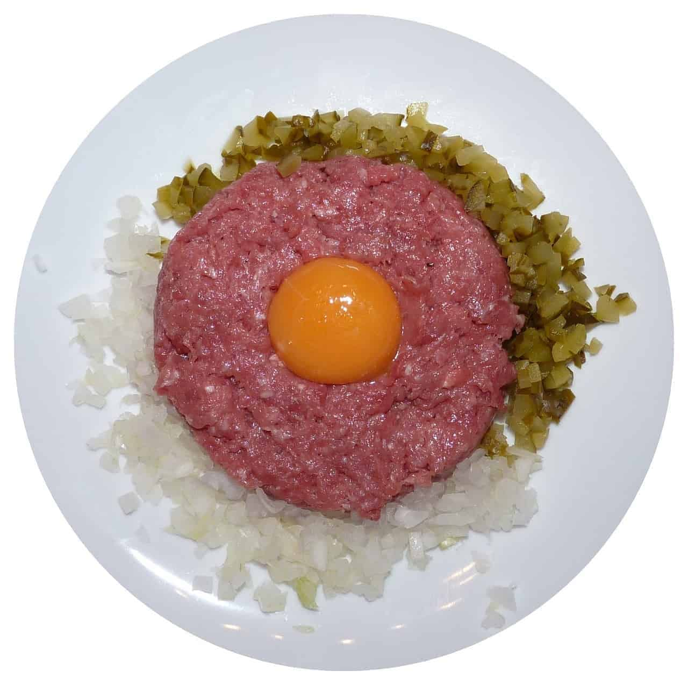

Tatar steak

Tartare steak with a recipe which is a feast for the palate
A must-have item on the menu of every Tartare lover. A delicious, well-seasoned taste that will surely appeal to each of your guests. We serve Tatar as a side dish, and we all know what it is usually served with.
Poles love Tatar, I am Polish and have been eating it since I was a kid. But there are few exceptions to the rule, not everyone will eat raw meat or raw egg. Before you make a Tatar make sure you start out with the best and freshest ingredients, and you have to know the sources where it came from. Enjoy and Smacznego!
Ingredients
- 300 grams beef eye round roast or beef tenderloin
- 1 small yellow onion
- 2 brine or dill pickles
- 2 egg yolks
- 1 tablespoon oil
- 1 teaspoon liquid seasoning to taste (Soy sauce)
- 1 salt to taste
- 1 black ground pepper to taste
Steps
- Make sure the meat fresh and is finely cut up.
- Mix meat with oil and season to taste with liquid seasoning, add salt and freshly ground black pepper.
- Cut the peeled onion, marinated mushrooms and pickled cucumber into very small cubes.
- Place 1/2 of a portion of meat on a plate making an indent in the middle with a spoon, place a raw yolk on top.
- Place cut up onion, pickled cucumber and marinated mushrooms around the meat. Serve immediately with fresh breads.